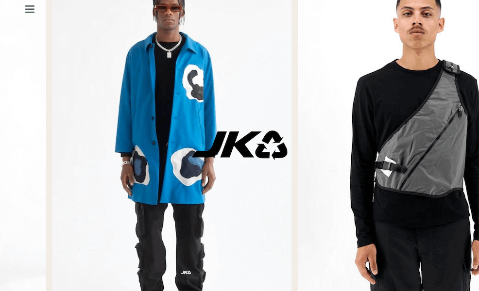
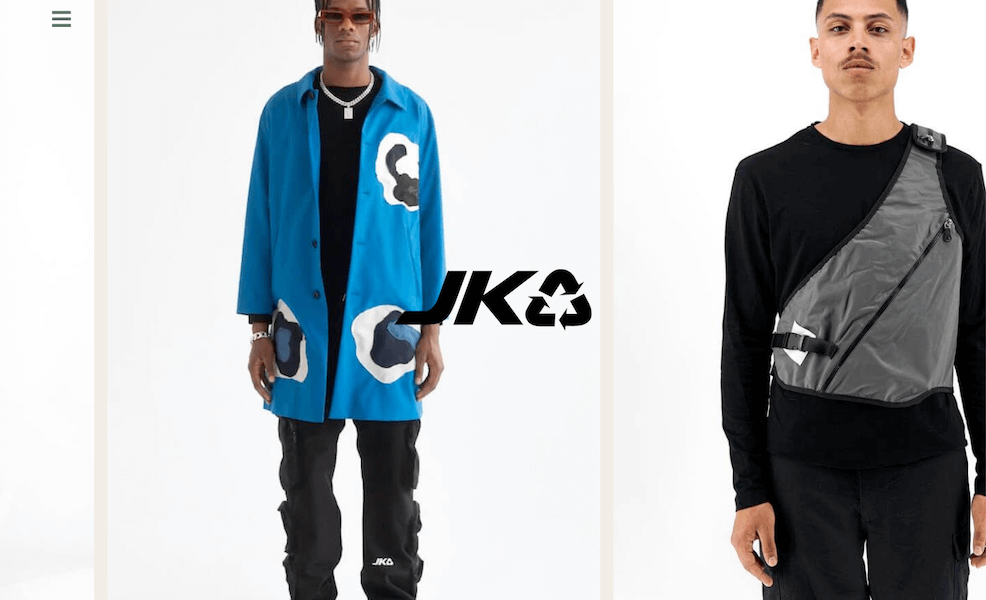
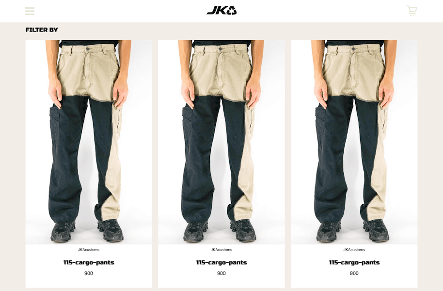
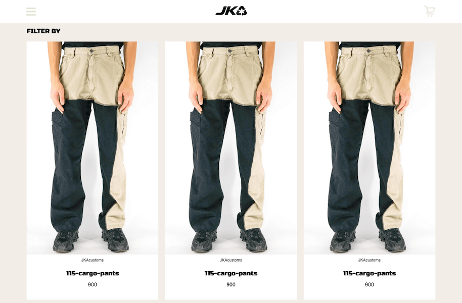

Redesign af JKA
Vi har fået til opgave at lave et redesign af en virksomheds website samt producere indhold til deres sociale medier. Det er en gruppeopgave, men jeg vil her fokusere på det, jeg har lavet.
Vi har fået til opgave at lave et redesign af en virksomheds website samt producere indhold til deres sociale medier. Det er en gruppeopgave, men jeg vil her fokusere på det, jeg har lavet.


 


 

Vi har gennem hele forløbet benyttet os af metoden Scrum. Det har vi brugt til at planlægge og styre vores arbejdsopgaver.
Vi har brugt dette Trello Bord. Jeg har også brugt Trello til at dele større arbejdsopgaver op for at gøre dem mere overskuelige.


Ud fra et ønske om at lave en ny, anderledes og spændende forside, man aldrig har set før, har vi valgt at lave en hjemmeside med mere bevægelse/interaktion. Dette går fint i tråd med JKA's motto: World In Motion. Jeg har alene stået for kodningen af forsiden. Her har jeg fokuseret på interaktiv bevægelse ved at lave en produktbilledkarrusel, hvor brugeren kan styre hastighed og retning med musen.
Uden CSS er det ikke muligt at style hjemmesiden eller lave effekter. Jeg har blandt andet lavet en hover-effekt over billederne i footer'en. Formålet med dette er at gøre brugeren klar over, at man kan klikke på billederne.
Når man kører musen over billederne, sker der to ting: For det første bliver det grønne overlay mere transparent og for det andet skifter udseendet af understregningen. Ændringen af understregningens udseende er en lokal konvention, som vi bruger på hele siden. Derfor ved brugerne, at de kan klikke på billederne.
Det grønne overlay giver alle tre billeder det samme udtryk.

Video er rigtig godt til at skabe blikfang på sociale medier. Af den grund har vi valgt at lave en SoMe-video. Derudover har vi også lavet en baggrundsvideo til "About us"-siden. Denne videos formål er at skabe et indtryk af JKA's stil. Den har derfor ikke baggrundsmusik men blot stemningsklip, der kører i loop.
SoMe-videoen er eksporteret i kvadratisk format, så den optager mere plads i Facebook-feedet end videoer i 9:16-format. Videoen har baggrundsmusik, hvor der er klippet efter beatet. Det sætter musikken i fokus og giver en frisk og ung stemning.
Mit primære bidrag til videoerne har været at finde det optimale udstyr samt opsætning af dette. Herudover har jeg stået for optagelserne på loaktionen. Vi har filmet alt på Panasonic Lumix G80 med stabilizer og har anvendt LED-lyspaneler.
Det har taget os 3½ uge med intens arbejde at blive færdige med redesignet af JKA's hjemmeside. Du kan selv gå på opdagelse i vores redesignede hjemmeside.
Se hjemmesiden